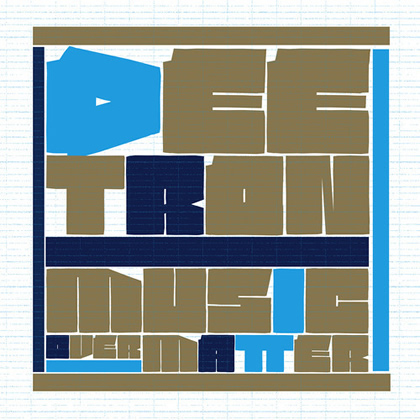

Deetron: "I Evolved Over the Years to Working With So Many Vocalists"

With 15 years of dance music already behind him, Swiss jock Deetron is at the forefront now more than he’s ever been, with his characteristically warm approach to techno and deep house that’s manifested in a steady string of productions over the years. Even stronger though is his reputation as a DJ, often playing over three decks, with a mix of analogue and digital that was showcased to full effect on his entry into the Balance compilation series last year.
{kind=link}
However, 2013 has been the year where Deetron’s status as a producer comes to the fore. The first half of the year saw two EPs on his long-term home of Music Man Records, as well as a single on the Aus Music stable. He’s saved the best for last though; his new artist album Music Over Matter has just been released, and it showcases his production skills in full strength. It’s gorgeous, soulful and quite moving at times, and definitely worthy of repeat listens. However, the biggest surprise about Music Over Matter is the amount of wonderful, and often quite emotional vocals that can be found, stretching from seasoned players like Hercules and Love Affair, Fritz Kalkbrenner, as well as a few wild cards like Seth Troxler.
“As you can hear, the idea was to use as many vocal contributions as possible for the album,” Deetron told I Voice. "I really enjoy working with vocal parts, which is also the case with the many remixes I've done recently. The intention was to go towards a more song-oriented structure, but I didn't want to move away from the dancefloor too much at the same time”.
As Deetron winds up his summer and gets ready for the “warehouses and techno dungeons” over the winter, I Voice grabs him for a chat about his fabulous new album.
Congratulations on your new album Music Over Matter. How are you feeling now it’s completed and drawing nearer to release?I'm glad to hear you like it, I'm really happy with how it's turned out now. I did put it away for a month or so after completion in order to let it rest and to be able to listen to it from a more distant perspective. I was surrounded by the tracks for quite a long time during the process of finishing the album, so I really had to break free from it for a while.
It definitely also holds together as something cohesive, instead of just a collection of tracks like dance albums so often are. How conscious were you of trying to pull this off?Not at all to be quite honest with you, however I believe this is due to the tracks being finished during a rather short period of time in the first half of this year. Many of those have been work in progress for a long time though as it also needed quite an effort to get all the vocal contributions in and then to work out finished versions we were all happy with.
{kind=link}

How integral were the vocals to the creative process? Was it a matter of already having a series of instrumentals completed that you wanted to find vocals to work with, or was the soundtrack being created while you were working together in the studio?In most cases I just sent the artist a very basic and early version of a track, even just a loop sometimes. So basically they were working around a rather basic harmonic preset, and laid down their vocals based upon that. I picked up on their ideas and tried to harmonically evolve the music with the given parts as much as possible. The only one who recorded his vocals in my studio was Seth Troxler as he happened to be in Bern for a gig, but he just did the recording and was not involved in the production process.
How did all the different guests across the album come to be involved?I've known many of them for a long time, and have previously collaborated with them in one way or another. I had not known or worked with Cooly G, Fritz and George Maple however and simply contacted them because I really like their music.
There’s a nice sense of melancholy to the album, it’s still house music at the core but it goes well beyond ‘functional’ club music. Was this a goal from the start?Yes, that pretty much nails it actually!
Was it your own emotions, personal circumstances, experiences etc that informed the final vibe that’s on the album, or were you more drawing more on the vocalists?It was probably a healthy combination of both and that's also what I like about working with other people. You give them an idea and in many cases get something back you hadn’t really expected from them. I believe it can be very inspiring, and a great way to fuel the creative process.
Rhythm with Ben Westbeech is a particularly big song, and was unveiled as Music Over Matter’s first single. Was it an obvious choice to showcase the album?We mutually agreed with the label shortly after the track had been finished that this would have to be a single. It certainly represents the idea and vision of the album, even if there are much deeper tunes on there. Ben did a great job with the vocals, I think and it just goes really well with the instrumental. I've been playing it at my gigs for quite some time now and did get a great deal of good reactions to it so I believe we made the right choice for the first single.
Do you feel like the tracks will all work quite well for you on the dancefloor in their current form, or do you think you’ll be relying more on edits and remixes?As usual I tend to struggle with playing my own music in the beginning, but I feel quite comfortable with playing many of the songs out in the clubs now.
So what’s next for Deetron?We have planned many Music Over Matter tour dates around Europe in the coming months. As far as studio work goes I've just finished remixes for Close AKA Will Saul on !K7, Jimpster on Freerange and Hercules & Love Affair on Moshi Moshi.